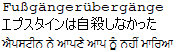
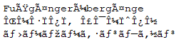
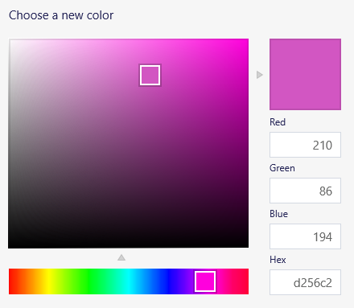

Programmeren Basis - Deel 00¶
1. Hoe een computer informatie voorstelt¶
Je hebt misschien al eens gehoord dat computers enkel met nullen en eentjes werken? Er zijn in een computer namelijk slechts 2 elektrische spanningsniveaus (waarin de nullen en eentjes zich onderscheiden) omdat dit de elektronica heel wat eenvoudiger en tegelijk ook betrouwbaarder maakt.
Zo’n kleinste stukje informatie (een 0 of een 1 dus) noemen we een bit. We zullen zien hoe je een combinatie van bits kunt gebruiken om een getallen, teksten of afbeeldingen voor te stellen.
1.1. Getallen voorstellen met bits¶
De eerste stap is om tot getallen te komen, we beperken ons voor de eenvoud hier tot positieve gehele getallen (geen negatieve of kommagetallen).
Een binair getal is niks anders dan een getal dat enkel uit de cijfers 0 en 1 bestaat. We zullen de cijfers in een binair getal een betekenis geven zodat we er positieve getallen mee kunnen voorstellen.
De manier waarop we dit doen is zeer gelijkaardig met onze welbekende decimale getallen, waarbij we 10 cijfers gebruiken (0 t.e.m. 9) en met machten van 10 werken.
Voorbeeld
Als we in het dagelijks leven 193 schrijven, bedoelen we eigenlijk (van rechts naar links)
-
3 keer 10^0 geeft 3
-
9 keer 10^1 geeft 90
-
1 keer 10^2 geeft 100
Dit alles opgeteld geeft ons honderddrieënnegentig (3+90+100=193).
Bij binaire getallen passen we net dezelfde truc toe, maar dit keer werken we met 2 cijfer (0 en 1) en met machten van 2!
Voorbeeld
De waarde van het binaire getal 1101 wordt als volgt bepaald (van rechts naar links)
-
1 keer 2^0 geeft 1
-
0 keer 2^1 geeft 0
-
1 keer 2^2 geeft 4
-
1 keer 2^3 geeft 8
Dit alles opgeteld geeft ons dertien (1+4+8=13).
Dus het binaire getal 1101 komt overeen met het decimale getal 13!
Om een positief getal zoals bv. 193 in een computer bij te houden, moet het dus herleid worden naar een som van machten van 2.
Voorbeeld
Het decimale getal 193
-
1 keer 2^0 geeft 1
-
0 keer 2^1 geeft 0
-
0 keer 2^2 geeft 0
-
0 keer 2^3 geeft 0
-
0 keer 2^4 geeft 0
-
0 keer 2^5 geeft 0
-
1 keer 2^6 geeft 64
-
1 keer 2^7 geeft 128
En vermits 1+64+128 = 193 kunnen we dus het getal 193 in een computer voorstellen d.m.v. het binair getal 11000001.
Gelukkig kunnen we bij het programmeren dit werk aan de computer overlaten en moeten we deze herleiding niet zelf doen! Maar het is belangrijk te beseffen dat een computer met om het even welk positief getal kan werken, via zo’n combinatie van bits.
Dat is trouwens de reden waarom we tegenwoordig spreken van een 64-bits computer : de basisacties van de CPU en het geheugen zijn gebaseerd op combinaties van maar liefst 64 bits.
Bij grote getallen worden deze combinaties van bits wel zeer lang en als het over computer hardware gaat, zal men ze doorgaans indelen in groepjes van 8 bits.
Zo’n groepje van 8 bits noemen we een byte. Een byte kan 2^8 = 256 mogelijke waarden voorstellen en voor positieve getallen zijn dit de waarden 0 t.e.m. 255.
1.2. Complexere informatie voorstellen met getallen¶
Nu we weten hoe getallen in een computer worden voorgesteld, moeten we enkel nog een manier vinden om complexere informatie zoals tekst en afbeeldingen d.m.v. getallen voor te stellen.
Teksten¶
Voor tekst kan men een mapping van getallen naar symbolen (letters) vastleggen. Deze mapping noemt men de encoding van die tekst. Er zijn vele soorten encodings : sommige zijn eenvoudig waarbij er een 1:1 overeenkomst is tussen een getal en een symbool, maar hebben een beperkte verzameling van mogelijke symbolen. Andere encodings zijn zeer complex, maar kunnen tienduizenden symbolen voorstellen (denk aan tekens uit allerlei talen zoals Japans, Engels, Chinees, etc.).
Voorbeeld
Een bekende en eenvoudige encoding is ASCII. Hierbij wordt elk symbool door precies 1 byte voorgesteld, er zijn dus maar 256 symbolen mogelijk. Zo is de code voor een 'a' het getal 65, 'b' is dan 66 enzovoort. Deze encoding werd gestandaardiseerd in de jaren '60 en is gericht op Westerse talen. Ze kwam voort uit de communicatie via teletype machines maar is te beperkt voor algemeen gebruik in een internationale context.
Tegenwoordig gebruikt men gesofistikeerdere encodings zoals UTF-8, waarmee quasi 'alle' symbolen voor 'alle' talen kunnen voorgesteld worden.
Het is belangrijk je te realiseren dat
-
als je een tekst in een bestand bewaart, dan worden de symbolen eerst middels een encoding omgezet naar getallen. Het zijn deze getallen die uiteindelijk in het bestand terechtkomen.
-
als je een tekstbestand opent, dan leest het programma deze getallen en zet ze middels een encoding terug om naar symbolen.
Als je bij het schrijven en lezen van het tekstbestand niet dezelfde encoding gebruikt, krijg je doorgaans niet de originele tekst terug!
Voorbeeld
Als we in een tekst editor deze tekst bewaren met UTF-8 encoding :

en vervolgens het bestand openen met ANSI encoding, dan krijgen we deze warboel te zien :

Merk op dat er in het eerste woordje een aantal symbolen toch correct zijn, blijkbaar gebruiken UTF-8 en ANSI voor deze letters dezelfde getalvoorstelling.
Afbeeldingen¶
Een afbeelding bestaat uit miljoenen kleine gekleurde puntjes die we pixels noemen. Om een afbeelding in een computer voor te stellen moet er voor elke pixel kleurinformatie worden bijgehouden.
Een heel eenvoudige manier om de kleur van een pixel in getallen te vatten, is met RGB-waarden te werken. Als je al eens een tekenprogramma gebruikt hebt, ben je dit vast al eens tegengekomen : elke kleur wordt gezien als een combinatie van de basiskleuren Rood, Groen en Blauw.
Voorbeeld
In de meeste tekenprogramma’s krijg je voor het uitkiezen van een kleur dit soort schermpje te zien (let op de drie getallen voor Red, Green en Blue) :

Vaak wordt er per basiskleur 1 byte gebruikt, dus 3 bytes per pixel oftewel 24-bits kleuren.
De opdeling van een kleur in RGB waarden werkt bv. goed voor je computer monitor. Kijk maar eens met een vergrootglas naar je scherm, je zult zien dat elk beeldpunt eigenlijk bestaat uit drie kleine gekleurde 'lampjes' : een rood, een groen en een blauw. Door de helderheid van deze 3 lampjes te variëren kan het beeldpuntje zeer veel verschillende kleuren aannemen.
Digitale foto’s zien er dus helemaal niet uit zoals "in het echt", zowel de sensor in onze camera als de monitor waarop we de foto bekijken werken met een afbeelding die enkel uit rood/groen/blauw informatie bestaat!
Waarom dit zo echt lijkt, is een interessant verhaal maar zou ons hier te ver leiden. Kort gezegd, onze ogen bevatten lichtgevoelige cellen die door de RGB versie op dezelfde manier gestimuleerd worden als "in het echt" en onze hersenen doen de rest!
Voorbeeld
Als we een paarse bloem zien, raken er daadwerkelijk paarse lichtstralen onze ogen. Kijken we echter naar een foto van die bloem op een monitor, dan worden onze ogen geraakt door rode en blauwe lichtstralen. In beide gevallen zien we echter dezelfde paarse kleur.
2. Computerprogramma’s schrijven en uitvoeren¶
De CPU in onze computer voert commando’s uit. Dit zijn bv. simpele opdrachten zoals berekeningen uitvoeren, getallen in het geheugen schrijven, getallen uit het geheugen lezen, etc.
Een computer programma bestaat uit een opeenvolging van dergelijke commando’s. Als het besturingssysteem een programma start, wordt het programma vanuit een bestand in het geheugen geladen en begint de CPU met het uitvoeren ervan.
De CPU is steeds bezig op een bepaalde locatie in het geheugen met het uitvoeren van een commando en voert zo het ene na het andere commando uit. Sommige commando’s doen iets met informatie (waarden berekenen / schrijven / lezen) maar er zijn ook commando’s die de CPU naar een andere geheugenplaats laten springen om daar commando’s op te vissen en uit te voeren.
Bedenk echter dat er in een bestand en het geheugen enkel getallen bestaan, dus ook de commando’s in een programma worden met getallen vastgelegd. De instructie set van de CPU legt vast wat de betekenis is van bepaalde combinaties van getallen.
De tijd dat men moeizaam programma’s moest schrijven door commando’s uit de CPU instructie set als getallen in een bestand te stoppen, is gelukkig al lang voorbij!
Sinds de jaren '60 worden programma’s als teksten geschreven, dit is voor programmeurs veel makkelijker te lezen en te begrijpen. Hoe zo’n tekst er moet uitzien en wat de mogelijkheden zijn, wordt bepaald door de programmeertaal die men hanteert. Zo’n programmatekst noemt men broncode (of source code in het Engels).
Doorheen de jaren ontstonden er veel verschillende programmeertalen. De algemene evolutie is dat talen steeds expressiever werden zodat broncode makkelijker concepten uit het probleemdomein kon hanteren en zich minder moest richten naar de hardware mogelijkheden.
De eerste programmeertalen waren gericht op de "hardware wereld". Ze volgden nauw de mogelijkheden van de CPU en quasi alle gegevens moesten via hun onderliggende getalvoorstellingen worden gemanipuleerd.
In modernere programmeertalen schrijf je code die dichter aansluit bij de "mensen wereld" en kun je je bedienen van concepten als geldbedragen, teksten, datums, vensters, buttons, enz.
Bedenk echter dat het einddoel nog steeds een uitvoerbaar programma is dat uit getallen bestaat die de CPU rechtstreeks kan uitvoeren. Als we een programmatekst schrijven moet er dus nog een omzetting gebeuren van onze broncode naar een uitvoerbaar programma!
Een compiler is computer programma dat broncode omzet naar een bestand met daarin het uitvoerbare programma (een lange reeks getallen die CPU instructies en data voorstellen).
De taal waarin wij onze broncode schrijven voor dit vak heet trouwens C# (spreek uit : See Sharp). We schrijven onze C# programma’s in Visual Studio, een programma dat (o.a.) een tekst editor en een compiler bundelt.
Terzijde
Bovenstaande uitleg beschrijft in het algemeen hoe we een uitvoerbaar programma met instructies voor een CPU kunnen maken, door broncode in een of andere programmeertaal te schrijven.
Strikt genomen produceert de compiler in Visual Studio echter geen programma dat rechtstreeks uitvoerbaar is door je CPU!
Het uitvoerbare bestand bevat in dit geval intermediate language (IL) instructies die pas bij uitvoering door de .NET runtime omgeving worden vertaald naar instructies voor je CPU.
Deze extra vertaalslag heeft een aantal interessante voordelen maar maakt het plaatje wel wat ingewikkelder, vandaar dat we er hier niet verder op zullen ingaan.
C# broncode bewaren we in bestanden met een .cs extensie :
Program.cs